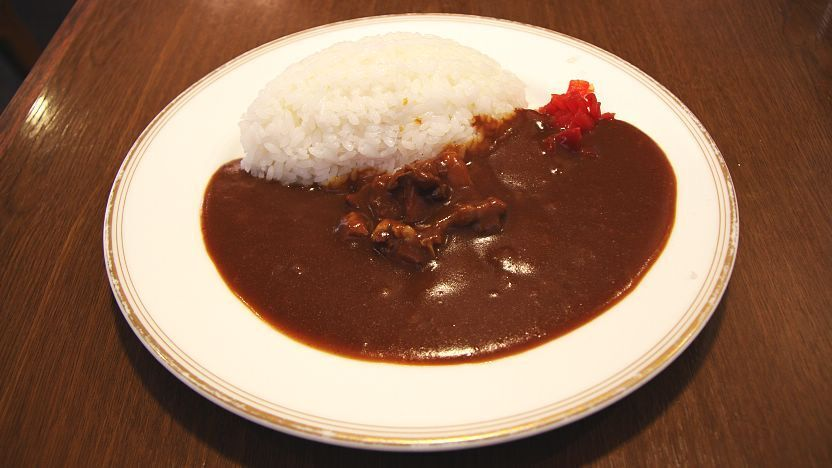
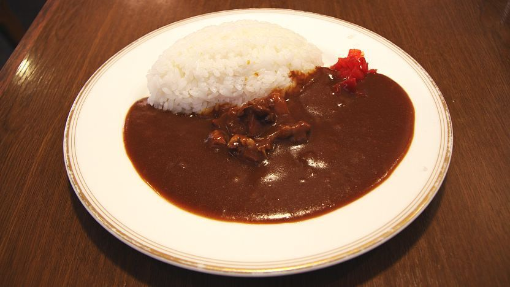
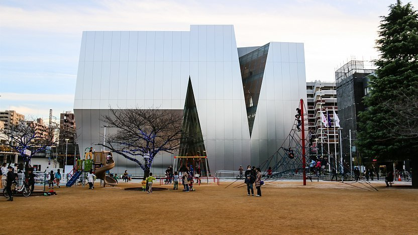
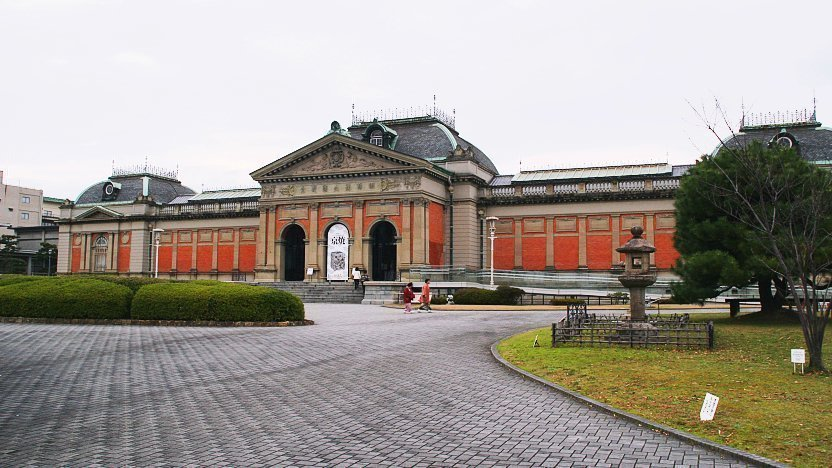
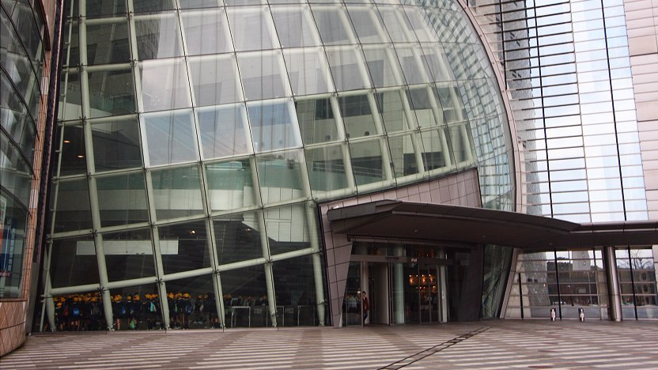

Japan
Explore Interests
Manga and Anime
Modern day manga (漫画) can be defined as comics corresponding to a Japanese style, which originated during the mid-1900s. The popularity of manga in Japan has since ballooned. Today, there is a huge domestic industry for manga, and increasingly so internationally. In Japan, people of both genders and all ages read manga.
The range of manga genres is diverse, with content ranging from history to science fiction and from teenage romance to profound themes about life. The comics are broadly separated into four categories according to the target audience: boys, girls, youths and matured. They can be commonly found in bookstores and convenience stores all over Japan.
List of Popular Anime
- Dragonball
- Sailor Moon
- Pokemon
- One Piece
- Spirited Away by Studio Ghibli
Spirited Away
Food and Drinks
Japanese cuisine (和食, washoku) offers an abundance of gastronomical delights with a boundless variety of regional and seasonal dishes. Restaurants in Japan range from mobile food stands to centuries old ryotei, atmospheric drinking places, seasonally erected terraces over rivers, cheap chain shops and unique theme restaurants about ninja and robots. Many restaurants are specialized in a single type of dish, while others offer a variety of dishes.
Popular Dishes
- Sushi
- Donburi
- Rice balls (onigiri)
 Donburi

Japanese Curry
Donburi

Japanese Curry
Japan Guide on Popular Dishes
Museums
Japan is home to a large number and variety of excellent museums. Whether it is about religion, science, history, geography or arts and crafts, museums of different subjects and interests can be found across the country.
Top Museums in Japan

Sumida Hokusai Museum

Kyoto National Museum

Osaka Museum of History